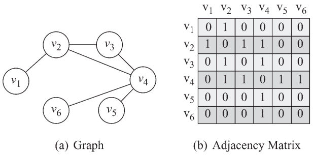

前言
作为一个还只会一点皮毛的初学者, 在这里把自己的所学记录下来, 有问题的地方希望大家可以指点(暂时没开评论, 不过有邮箱~). 以后随着学习的深入, 可能还会对现在的文章进行编辑.
在我们的生活中, 各种学科中, 一些事物可以被抽象成的节点与连边的结构. 比如:
- 人与人之间的社交, 每个人可以被看成一个节点, 两个人是否认识决定他们之间是否拥有连边, 这样可以构成一个网络, 称为社交网络.
- 互联网中, 网站可以作为节点, 超链接作为边.
- 在电商中, 用户与商品都可以作为节点, 用户是否购买商品可以作为边.
节点与边组成的抽象网络, 学术上可以被称为复杂网络, 属于系统科学的一个重要部分. 围绕复杂网络展开的研究, 可以包括网络本身的一些静态性质, 如节点重要性等; 也可以包括网络的一些动态演变, 比如疾病传播等.
同时, 更进一步, 节点可以有自己的类别和属性, 边可以有方向, 也可以有属性, 这样就可以构成更加丰富的网络. 而基于这样一些丰富的网络, 可以用来做更多的分析与创造. 比如基于图结构的数据, 构建模型, 来进行预测或表示; 结合自然语言处理技术, 构建知识图谱, 也是可以大有作为的.
若想在一些现实问题中, 运用图算法相关的理论和工具, 有两个关键要点:
- 如何将现实场景中的对象转化为网络结构.
- 选择合适的方法处理网络结构数据, 以获得期望的结果.
谈到图, 或者图论, 都会提及柯尼斯堡七桥问题.
问题是能否每座桥只经过一次, 遍历所有桥? 经过大神欧拉的一顿操作, 证明这是不可能的, 同时还对这一类问题做了总结和抽象: 对于连通有限图, 度数为奇数的节点, 数量只能为0或者2, 只有这样才能所有边都经过且只经过一次.
这里的度数, 就是节点的连边数量. 通俗地理解, 就是一个节点, 由一条边到达, 必然需要另一条边离开, 所以需要偶数的度数. 除非这个节点作为起点或者终点.
图的基本结构
节点 & 边
节点与边是组成图的基本单元.
有向图 & 无向图
根据边是否带有方向(指向性), 可以把图划分为有向图和无向图.
度数
节点的度数指的是其周围边的数量, 如果是有向图, 那么还可以细分为出度和入度.
度数分布
度数的分布指的是具有不同度数的节点, 其数量在整体节点中的占比.
与其它一些场景下, 经常出现正态分布不一样, 在显示中的不少网络, 其度数分布服从幂律分布, 即绝大部分节点的度数较小, 极少部分节点度数很大.
计算机储存图的方法
邻接矩阵

在一个正方矩阵中, 行列数目等于节点数目, 格点数值1表示对应两个节点相连, 或者其中一个节点连向另外一个节点.
如果是无向图, 那么是对称矩阵.
用邻接矩阵, 有一些问题:
通常非常稀疏, 即大量格点为0.
若节点较多, 则会耗费大量储存空间.
邻接表
只记录相互连接的节点与边的信息, 相比邻接矩阵, 可以节省很多空间.

并且具体的储存方式可以根据有向图, 还是无向图进行调整.
其优点是便于查询每个节点的连接情况, 缺点是数据仍然存在冗余.
边表
只储存边, 其占用空间最小, 是当前比较常用的储存方式.
边表中一条数据, 代表一条边. 在有向图中, 代表一个节点指向另一个节点.